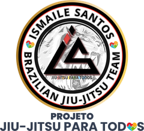
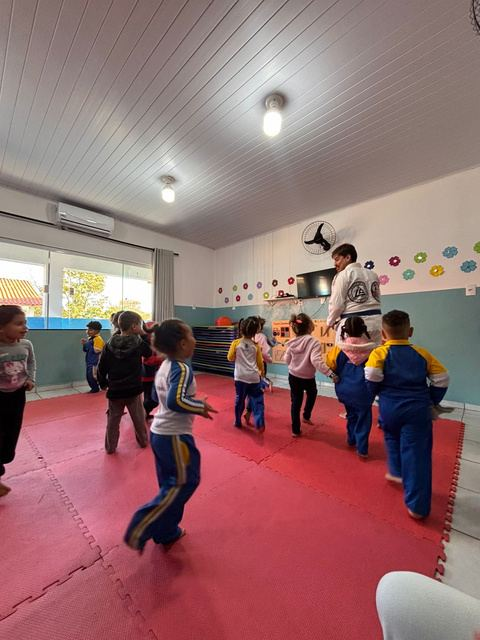
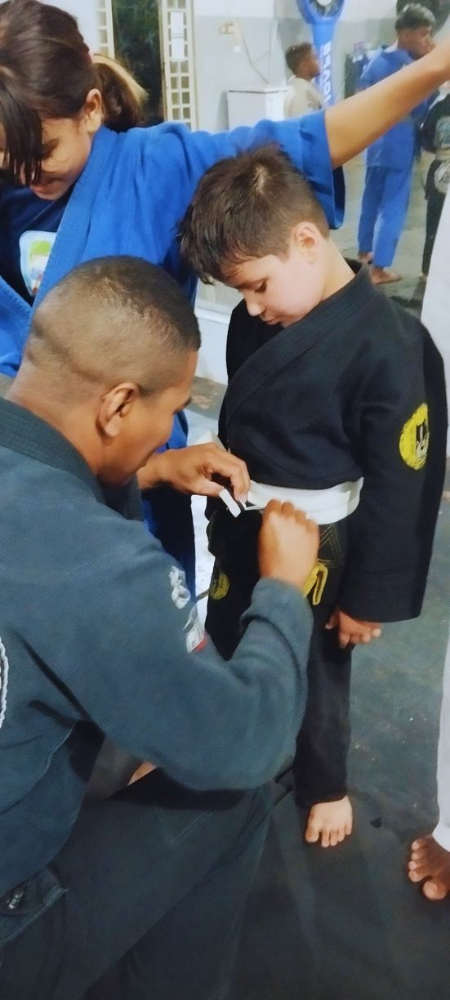
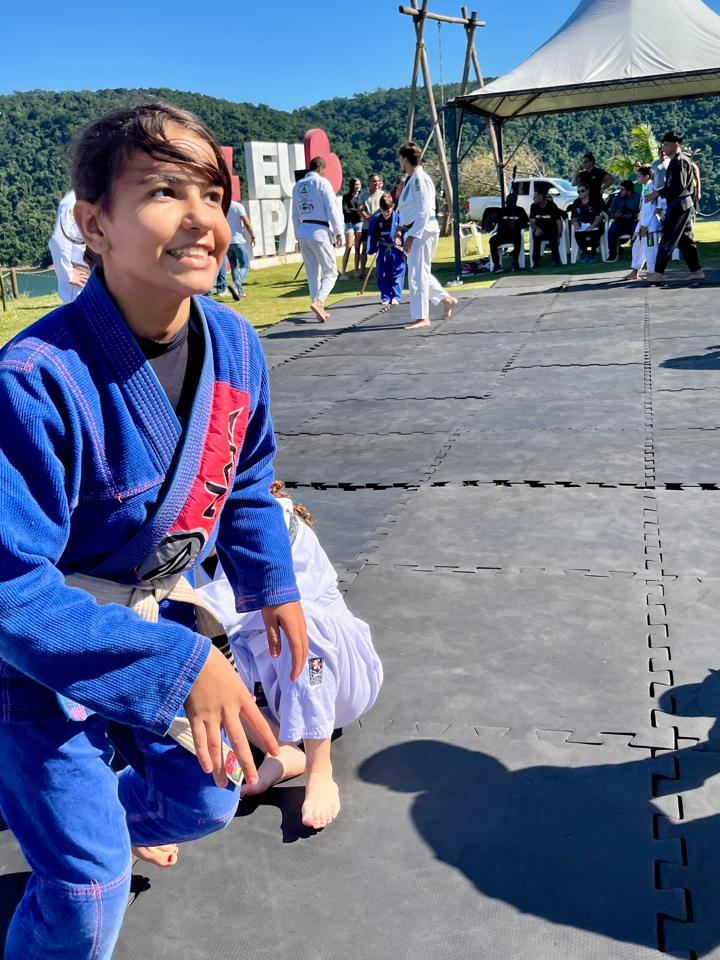
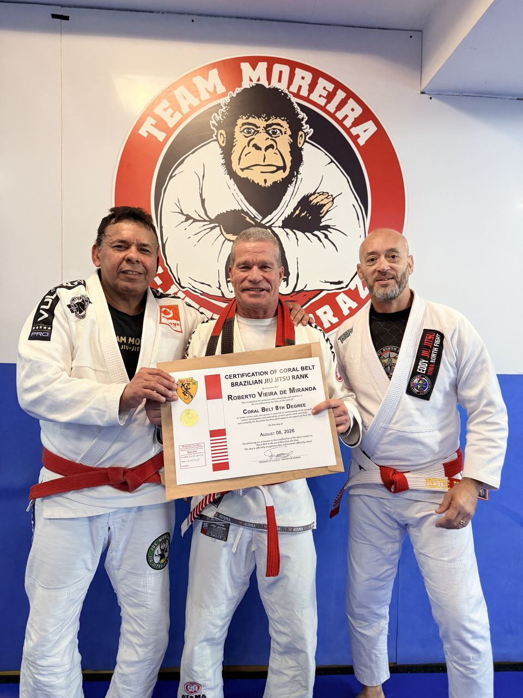
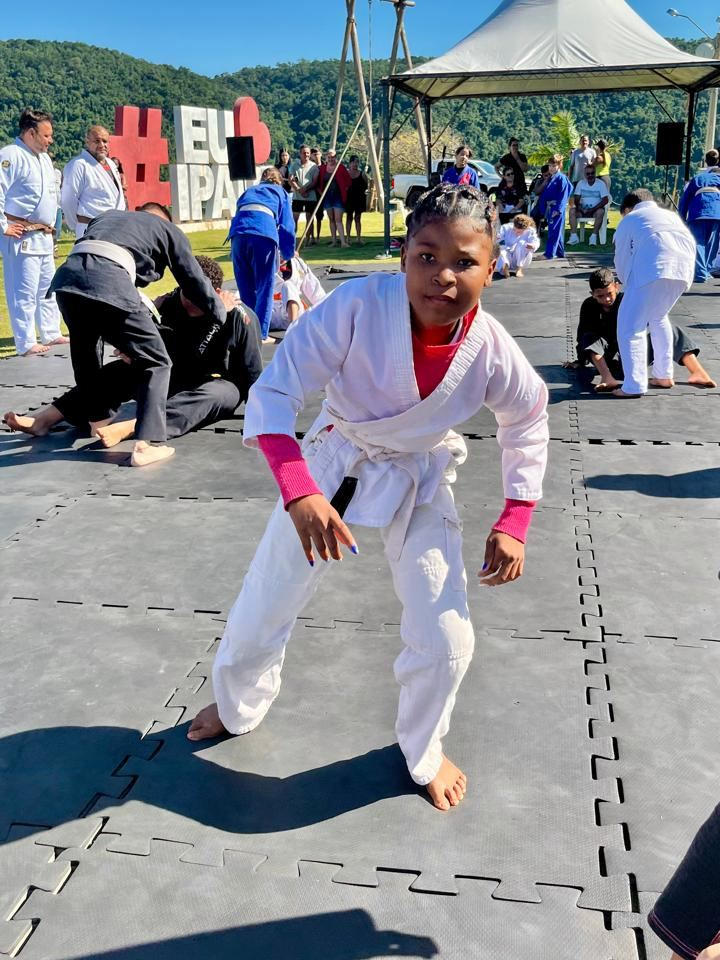

Hay niños que solo necesitan una oportunidad
Y personas dispuestas a caminar con ellos.
El deporte educativo como herramienta de transformación social. Conoce el Instituto Pró-Ativo y el Proyecto Jiu-Jitsu Para Todos, en Ourinhos, São Paulo, Brasil.
Un proyecto social que usa el jiu-jitsu como camino de formación humana
El Instituto Pró-Ativo es una organización de la sociedad civil brasileña comprometida con la promoción de la ciudadanía, la educación y la calidad de vida.
Promovemos la inclusión social, el fortalecimiento escolar y el desarrollo integral de niños, niñas y adolescentes a través del deporte educativo, con el jiu-jitsu como principal herramienta.
Nuestro público prioritario son estudiantes de escuelas públicas, de 6 a 17 años, en situación de vulnerabilidad social, derivados por escuelas, los CRAS (centros públicos de asistencia social) y el Consejo Tutelar, incluidos niños, niñas y adolescentes neurodivergentes.

El Proyecto Jiu-Jitsu Para Todos es nuestra principal iniciativa: formando atletas, construyendo carácter, transformando historias.

Todo comenzó con un tatami
Con pocos niños, un tatami sencillo y una certeza: el deporte transforma.
- 2015 El Proyecto Jiu-Jitsu Para Todos nace con 8 alumnos, por iniciativa del Profesor Humberto Martini, Betão (in memoriam), cinturón negro 3.er grado (federado CBJJP/IPJJF), y sus alumnos, al notar el creciente interés de los niños del barrio. Entre ellos estaba el actual Sensei Ismaile Santos, quien desde el inicio asumió la primera línea, como voluntario.
- Desafíos y pandemia El proyecto creció de forma orgánica y responsable, pasó por distintos espacios e hizo una pausa durante la pandemia, retomando las actividades al terminar esta, bajo la supervisión técnica del Sensei Ismaile Santos, cinturón negro 1.er grado (federado CBJJP/IPJJF).
- 2021 Ampliamos nuestra mirada para acoger a niños con Trastorno del Espectro Autista (TEA) y, después, con TDAH, dificultades de comunicación y no verbales, adaptando metodología, ritmo y enfoque.
- Hoy Más de una década de compromiso con el deporte y la formación social. El tatami se convirtió en un espacio seguro, de inclusión real y de logros que van mucho más allá de los cinturones.


Linaje y tradición
El proyecto lleva las banderas de los equipos Eddy North Fight y Betão Jiu-Jitsu Team. Eddy North Fight está liderado por el Maestro Edwilson Rocha dos Santos, Eddy, cinturón coral 8.º grado (CBJJP/IPJJF, CBJJ/IBJJF, USBFJJ, CBJJS y FJJRIO). El Maestro Eddy fue alumno directo de Reylson Gracie —hijo de Carlos Gracie, uno de los fundadores del jiu-jitsu en Brasil— y actualmente es graduado por los Grandes Maestros Joe Moreira, Austregésilo de Athayde y Relson Gracie, todos cinturón rojo 9.º grado.
El desafío social
Muchos niños, niñas y adolescentes enfrentan a diario desafíos que afectan directamente su desarrollo.

Falta de acceso
Al deporte y a actividades extracurriculares.
Violencia y ocio
Exposición diaria a situaciones de riesgo.
Baja autoestima
Y dificultad con la disciplina y la rutina.
Deserción escolar
Riesgo real de abandonar los estudios.
Sin oportunidades adecuadas, estos jóvenes quedan más expuestos a situaciones que comprometen su futuro. Muchos encuentran en el tatami lo que les faltaba: dirección, pertenencia y acogida.
Del tatami al salón de clases
Trabajamos en cuatro frentes que se complementan para cuidar de cada niño de manera integral.
Deporte
Jiu-jitsu por grupo de edad y nivel técnico, pilates, yoga y una clase colectiva mensual de integración.
Educación
Informática, clases de prueba en escuelas aliadas y APAEs (asociaciones de educación especial), y charlas sobre disciplina y ciudadanía.
Desarrollo humano
Equipo multidisciplinario —psicología, terapia ocupacional, fonoaudiología y fisioterapia— para niños neurotípicos y neurodivergentes.
Familia y escuela
Evaluación inicial de cada caso, seguimiento de asistencia y calificaciones, y reuniones periódicas con directivos escolares y familias.


Más que deporte, una herramienta de transformación
Nuestra metodología se estructura en cuatro pilares formativos, trabajados de forma equilibrada en el desarrollo técnico y humano de los alumnos.
Disciplina y respeto
Límites, jerarquía, convivencia y responsabilidad, dentro y fuera del tatami.
Enfoque, perseverancia y superación
La progresión de cinturones fomenta metas claras, constancia y confianza en sí mismos.
Trabajo en equipo
Respeto al compañero de entrenamiento y a la importancia del grupo.
Autocontrol emocional
Manejar la frustración, la ansiedad y los desafíos de forma saludable.
Cómo trabajamos
- Clases de jiu-jitsu tres veces por semana, por grupo de edad y nivel técnico, respetando el ritmo de cada alumno.
- Control de asistencia y seguimiento de la evolución técnica y conductual.
- Grupos más pequeños para niños neurodivergentes, con apoyo multidisciplinario.
- Derivación por parte de la escuela o la familia, seguida de una evaluación inicial para adaptar la rutina y el grupo.
- Profesor calificado y monitor auxiliar, con participación constante de las familias.

Formación técnica y proyección deportiva
El proyecto no solo incluye. Prepara y proyecta.
- Sistema de graduación estructurado y federado
- Participación en campeonatos y eventos
- Desarrollo técnico progresivo
- Identificación e impulso de talentos

Momentos del proyecto
Clases, clases abiertas, eventos y graduaciones: un poco de lo que sucede dentro y fuera del tatami.






Nuestro equipo
Personas que dan vida al proyecto, dentro y fuera del tatami.

Sensei Ismaile Santos
Profesor cinturón negro 1.er grado · Federado CBJJP/IPJJF
Alumno del Profesor Humberto Martini, Betão (in memoriam), asumió la primera línea de Jiu-Jitsu Para Todos desde su inicio, en 2015, como voluntario, y conduce las actividades desde entonces, incluso en la reanudación tras la pausa de la pandemia.
Bajo su supervisión técnica, el proyecto comenzó a acoger, a partir de 2021, a niños con TEA, TDAH y otros desafíos del desarrollo, adaptando metodología, ritmo y enfoque.
Lleva las banderas de los equipos Eddy North Fight y Betão Jiu-Jitsu Team, vinculados a la tradición del jiu-jitsu Gracie.
Fernando Santim
ProfesorColabora en el desarrollo de los entrenamientos, viajes y alianzas.
César Evaristo
MonitorColabora en el desarrollo de los entrenamientos y de proyectos dentro y fuera del tatami.
Orlando Weber
InstructorColabora en el desarrollo de los entrenamientos, la marca y la metodología infantil, bajo la supervisión del sensei responsable.
Impacto y metas
Hoy atendemos a más de 100 niños, niñas y adolescentes. Queremos ampliar ese alcance hasta 200 alumnos, con seguimiento estructurado, participación familiar y formación técnica responsable.
Dónde estamos
Nuestras metas
Indicadores que seguimos
- Asistencia escolar
- Evolución conductual
- Participación familiar
- Progresión técnica
Desarrollo educativo
- Disciplina y responsabilidad
- Reducción de la deserción escolar
- Mejora en el comportamiento y el rendimiento
- Rutina y compromiso
Fortalecimiento familiar y social
- Acercamiento de las familias
- Un entorno seguro fuera del horario escolar
- Menos exposición al ocio y al riesgo
- Construcción de vínculos positivos
Desarrollo emocional y ciudadano
- Control emocional y autocontrol
- Respeto a las reglas y a la jerarquía
- Trabajo en equipo
- Formación de carácter y valores sociales
Seguridad, gobernanza y red de apoyo
Estructura jurídica, transparencia y responsabilidad para cuidar de cada niño y de cada apoyo recibido.
Seguridad y cumplimiento
- Profesores federados (CBJJP)
- Examen toxicológico periódico
- Antecedentes penales verificados
- Certificación en primeros auxilios
- Capacitación para trabajar con TEA y TDAH
Equipo multidisciplinario de apoyo
- Asesoría jurídica
- Trabajo social
- Educador físico
- Nutricionista
- Psicólogos aliados
Cultura y compromiso
- Ética y transparencia
- Entorno seguro e inclusivo
- Seguimiento pedagógico
- Seguimiento familiar
- Formación continua
Estructura institucional
- Consejo fiscal constituido
- Junta directiva voluntaria
- Contabilidad permanente
- Estatutos con alcance nacional
- Núcleo piloto en Ourinhos, São Paulo
Red de apoyo
Las acciones complementarias se realizan mediante alianzas con profesionales que nos apoyan, estudiantes en formación, escuelas municipales y estatales, los CRAS y el Consejo Tutelar, siempre con seguimiento técnico y coordinación responsable.

Cómo puedes ser parte
Empresarios, profesionales, educadores, líderes: el impacto social es una responsabilidad colectiva.
Estamos estructurando y fortaleciendo el proyecto para ampliar nuestro alcance y atender a aún más niños. Queremos que conozcas esta historia de cerca, no como espectador, sino como parte de ella. Porque las grandes transformaciones no suceden solas: las construyen las personas.

Conocimiento
Contribuye con lo que sabes: charlas, mentorías, talleres.
Infraestructura
Apoya con espacio, materiales, equipos o servicios.
Experiencia profesional
Sé voluntario en tu área: salud, educación, gestión, comunicación.
Inversión
Ayuda a mantener y ampliar el proyecto.
Difusión
Comparte nuestra historia en tus redes y en tu comunidad.
Conexiones
Presenta personas y empresas. Abre puertas para el proyecto.
Puedes apoyar con cualquier monto, como persona o como empresa. Cada contribución, voluntaria o institucional, genera un impacto directo en la vida de un niño.
El apoyo mediante incentivos fiscales brasileños (Ley de Incentivo al Deporte / FIA, fondo para la infancia) está en proceso de validación; contáctanos para saber más.
A dónde van los recursos
Los fondos recaudados se destinan prioritariamente a:
- Acondicionamiento del nuevo espacio
- Agua, electricidad, internet y limpieza
- Costos fijos de funcionamiento
- Material deportivo y de uso continuo
- Apoyo administrativo de la operación
- Actividades de integración y formación
Cómo crece el proyecto por etapas
-
Acondicionar el nuevo espacio
Garantizar el funcionamiento del nuevo espacio.
-
Garantizar un funcionamiento continuo
Ampliar calidad, alcance y regularidad.
-
Ampliar el equipo y la dedicación a medida que la base se consolida
Avanzar, en el momento adecuado, hacia la remuneración de profesores, monitores y apoyo administrativo.
Contrapartidas
Visibilidad de marca, asociación con la causa y presencia en las acciones del Instituto.

¿Quieres saber cómo puede participar tu empresa?
Conversamos sobre la forma de apoyo que más sentido tiene para tu negocio y te enviamos la propuesta completa.
Habla con nosotros
Formamos personas. Antes de formar atletas.
Contáctanos
Si tiene sentido para ti, ven a conocernos de cerca. Siente el ambiente, conversa con los niños y mira lo que estamos construyendo.
Correo electrónico
- @institutoproativo (se abre en una pestaña nueva)
- @projetojjparatodos (se abre en una pestaña nueva)
- @eddynorthfight.ourinhos (se abre en una pestaña nueva)